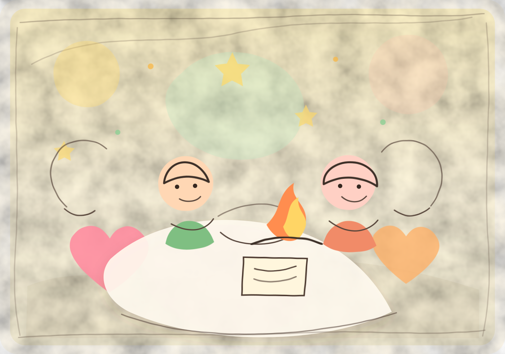

최근 수정 시각: 2026-06-30 09:24:44
Jio와 동현
과외로 시작해 고백, 휴가, 외박 데이트까지 이어진 두 사람의 기록.
둘이 같이 보낸 날들과 통화에서 쌓인 말을 모아뒀다. 큰 설명보다 실제 장면과 서로에게 닿은 말이 먼저 보이게 정리했다.
목차클릭해서 이동 · 펼치기/접기
1. 개요
Jio와 동현은 과외와 수업 사이에서 시작됐다. 처음엔 수업 얘기와 일정 얘기가 많았고, 어느 순간부터 서로의 취향과 말투, 오래 기억한 장면이 끼어들었다.
2026년 5월 19일 밤 구리에서 만난 뒤로 분위기가 확실히 달라졌고, 5월 21일 청담 오니바 저녁과 고백으로 둘은 공식적으로 사귀게 됐다. 그 뒤에는 수족관, 휴가 데이트, 외박 데이트가 이어졌다. 이 관계는 크게 선언한 말보다 실제로 움직이고 기억해준 장면이 더 오래 남는 쪽에 가깝다.
2. 요약
“오래 남는 건 밤늦게 찾아간 일, 손잡고 걸은 일, 꽃과 케이크를 준비한 일, 그리고 통화 끝에 마음이 조금 더 편해진 일이다.”
| 첫 번째 전환 | 5월 19일 밤, 동현이 구리로 찾아가 Jio를 만남. |
|---|---|
| 사귀기 시작한 날 | 5월 21일 청담 오니바에서 밥을 먹고, 꽃과 케이크 뒤에 고백함. |
| 초반 안정화 | 5월 22일 점심과 수족관 데이트로 전날의 고백이 일상으로 이어짐. |
| 통화의 역할 | 편지와 장문 메시지, 기억해둔 디테일, 예측 가능한 안정감이 통화 안에서 계속 확인됨. |
| 6월 휴가 | 6월 23일 제로컴플렉스와 청계천 근처 숙소, 영쉘던, 아사이볼, 복귀. |
| 6월 외박 | 6월 27일 북촌 한식 오마카세, 기가스, 한옥호텔, 다음날 파스타와 카페. |
3. 등장인물
3.1. Jio
애교 있고 부드러운 톤을 쓰지만, 관계에서 원하는 건 꽤 선명하다. 과한 확신보다 “내가 말한 걸 기억하고 있구나”라는 느낌과 잔잔한 안정감을 더 좋아한다.
- 구체적인 기억과 행동에 반응한다.
- 설렘과 안정감을 반대 개념으로 보지 않는다.
- 자신이 우선순위에 있다는 감각, 솔직함, 예측 가능한 경계를 중요하게 본다.
3.2. 동현
좋아하는 사람에게는 시간을 쓰고, 직접 이동하고, 장소를 고르는 쪽으로 마음을 표현한다. 말과 글이 길어질 때도 있지만, 핵심은 결국 “너를 오래 보고 있었다”는 쪽에 있다.
- 편지, 장문 메시지, 장소 선택처럼 오래 남는 장치를 잘 쓴다.
- Jio가 했던 말과 취향을 기억하고 다시 꺼내는 방식에 강하다.
- 다만 불안한 대화에서는 긴 설명보다 낮은 온도의 반복 행동이 더 잘 맞는다.
4. 통화로 쌓인 것
둘 사이에서 통화는 단순히 연락 시간을 채우는 일이 아니었다. 마음이 무거운 날에는 풀리는 쪽으로, 좋은 날에는 더 길게 보고 싶어지는 쪽으로 흘렀다.
편지를 여러 번 읽은 사람
Jio는 동현의 장문 카톡과 편지를 여러 번 다시 봤고, 비행기 안에서도 반복해서 읽었다고 말했다. 짧은 정답보다 장면과 관찰이 쌓인 말에 더 크게 반응하는 쪽이다.
말이 흘러가는 통화
셀로그, 책, 언어 공부, 영화, 창작, 가족에게 소개되는 이미지까지 주제가 자연스럽게 이어졌다. 억지로 깊은 얘기를 꺼내기보다, 일상에서 가치관으로 미끄러질 때 둘의 대화가 가장 편했다.
기억된다는 느낌
Jio는 동현이 자신을 메모하고 기억해둔다는 사실에 귀엽다고 반응했다. “많이 생각하니까”처럼 짧고 낮은 온도의 말이 오히려 더 잘 닿았다.
안정감의 이름
Jio가 말한 안정감은 재미없는 관계가 아니라 예측 가능한 관계에 가깝다. 일정, 사진, 짧은 공유, 경계를 먼저 말해주는 태도가 불안을 줄여주는 방식이었다.
좋은 면만 보는 게 아니라
Jio는 자신이 이상화되거나 대상처럼 보이는 걸 걱정했다. 그래서 이 관계에서는 “완벽해서 좋아해”보다, 좋은 면과 약한 면까지 천천히 알아가겠다는 말이 더 안전하다.
결국 다시 일상으로
무거운 대화가 지나간 뒤에도 둘은 시험, 건강, 사진, 다음 휴가, 강릉 같은 이야기로 돌아왔다. 큰 확인보다 작은 공유가 관계를 다시 편하게 만든다.
5. 작은 궁합 카드
첨부한 짝궁합 캡처의 핵심은 목생화와 높은 애정 점수다. 나무가 불을 살리듯, 동현의 매너와 먼저 움직이는 마음이 Jio의 따뜻한 리액션을 더 잘 살아나게 하는 쪽으로 정리했다.

목생화
사주 흐름은 목이 화를 살리는 상생 쪽. 동현이 분위기를 키우고, Jio가 그 온도에 밝게 반응하는 그림이다.
점수 느낌
앱 표현으로는 “타고난 호감 커플”. 인연 80, 친밀 80, 애정 85라 처음부터 호감이 생기기 쉽고, 가까워질수록 애정 쪽이 더 선명해지는 궁합.
잘 맞는 이유
매너 있는 남자와 리액션 좋은 여자의 조합. 기본 사고방식이 비슷하고, 선을 지키면서도 속 깊은 얘기를 꺼낼 수 있어 영혼의 싱크로율처럼 보인다.
조심할 지점
둘 다 지기 싫고 감정에 솔직해서 강 대 강이 될 수 있다. 한 번 꽁하면 냉전이 길어질 수 있으니 오기보다 빨리 말로 풀 때 오래 간다.
6. 데이트 기록
날짜별로 접어볼 수 있게 정리했다. 보고 싶은 날만 펼치면 된다.
데이트 기록 목차
2026.05.19 구리 심야 방문
밤늦게 구리까지 간 날. 아직 사귀자는 말은 없었지만, 굳이 거기까지 갔다는 것만으로 이미 분위기는 많이 바뀌어 있었다.
- 장소
- 구리
- 남은 것
- 늦은 시간의 이동, 직접 만난 것, 달라진 분위기
2026.05.21 청담 오니바와 고백
청담 오니바에서 저녁을 먹고 손잡고 걸었다. 동현은 꽃을 건넸고, 이어 바에서 케이크를 준비해 고백했다. 이날부터 둘은 공식적으로 사귀게 됐다.
그 뒤에는 호텔 스위트룸에서 영화를 보며 같이 있었다. 고백 자체도 컸지만, 고백하고 나서도 자연스럽게 옆에 머문 시간이 더 좋았다.
- 장소
- 청담 오니바 · 바 · 호텔 스위트룸
- 소품
- 꽃 · 케이크 · 영화
- 결과
- 공식 연애 시작
댓글
0개댓글 불러오는 중...
2026.05.22 점심과 수족관
전날 고백의 여운이 남아 있는 상태로 같이 점심을 먹고 수족관에 갔다. 큰 이벤트 다음날에도 밥을 먹고 천천히 걷는 시간이 이어졌다. 그래서 이 날은 고백이 하루짜리 장면으로 끝나지 않았다는 느낌이 있다.
- 코스
- 점심 · 수족관
- 느낌
- 고백 다음날에도 자연스럽게 이어진 하루
댓글
0개댓글 불러오는 중...
2026.06.23 휴가, 제로컴플렉스, 청계천
동현이 휴가를 나와 저녁에 Jio와 제로컴플렉스에 갔다. 이후 청계천 근처 숙소에서 쉬고, 넷플릭스로 영쉘던을 봤다.
다음날 아침에는 동현이 아사이볼을 시켜줬다. 조금 더 같이 있다가 복귀했고, 이 날은 저녁보다 다음날 아침까지 이어진 흐름이 더 오래 남는다.
그날 장면
저녁부터 다음날 아침까지 이어진 흐름대로 묶었다.


- 코스
- 제로컴플렉스 · 청계천 근처 숙소 · 영쉘던
- 다음날
- 아사이볼 · 함께 있다가 복귀
- 느낌
- 휴가의 시간을 같이 쓴 날
댓글
0개댓글 불러오는 중...
2026.06.27-28 외박, 북촌, 한옥호텔
외박을 나온 동현은 Jio와 북촌에서 한식 오마카세를 먹었다. 저녁에는 기가스에 갔고, 밤에는 한옥호텔에서 함께 시간을 보냈다.
다음날에는 파스타를 먹고 카페에 갔다가 각자 자리로 돌아갔다. 외박 데이트가 너무 과하게 끝나지 않고, 다음날 점심과 카페까지 자연스럽게 이어진 날이다.
그날 장면
낮 식사, 한옥호텔, 기가스 저녁 순서대로 묶었다.


- 코스
- 북촌 한식 오마카세 · 기가스 · 한옥호텔
- 다음날
- 파스타 · 카페 · 각자 복귀
- 느낌
- 다음날 점심과 카페까지 이어진 외박 데이트
댓글
0개댓글 불러오는 중...
7. 남은 장면
7.1. 직접 가는 마음
5월 19일 구리, 6월 23일 휴가, 6월 27일 외박은 모두 직접 시간을 내고 움직인 날이다. 이 관계에서 마음은 말보다 동선으로 먼저 보인다.
7.2. 고백 다음날
5월 21일에는 꽃, 케이크, 고백이 있었다. 그런데 더 좋은 건 바로 다음날 점심과 수족관이 이어졌다는 점이다. 고백이 이벤트로만 남지 않고 하루의 리듬으로 넘어갔다.
7.3. 다음날 아침
6월 24일 아침의 아사이볼은 작지만 선명하다. 밤의 분위기보다 다음날 아침을 어떻게 챙겼는지가 오래 남을 때가 있다.
8. 분위기
낮은 온도의 낭만
손잡고 걷기, 숙소에서 영화 보기, 다음날 밥 챙기기 같은 장면이 오래 남는다.
기억된 디테일
식당 이름, 장소, 아침 메뉴처럼 작은 것들이 둘 사이의 실제 질감을 만든다.
고백과 사적인 시간
오니바 고백처럼 딱 남는 장면도 있고, 숙소, 카페, 아침처럼 조용한 시간도 있다.
복귀가 있는 연애
휴가와 외박 뒤에는 늘 복귀가 있다. 그래서 같이 있는 시간이 더 압축된다.
댓글
0개댓글 불러오는 중...